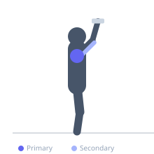
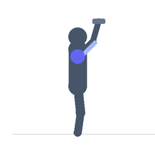

Exercise guide / Arnold Press
Arnold Press
The Arnold press is a dumbbell shoulder exercise that incorporates a pronation-to-supination rotation of the forearm during the pressing motion. By starting with palms facing the body and rotating to a forward-facing position at the top, all three heads of the deltoid are engaged across a fuller range of motion than a standard overhead press.
Primary muscles
deltoid anterior
deltoid lateral
deltoid posterior
Secondary muscles
triceps long head
triceps lateral head
Stabilizers
infraspinatus
supraspinatus
Equipment
Dumbbell (Fixed)
Optional
Adjustable Bench (Incline / Decline)


Starting position
- Sit on a bench holding dumbbells at shoulder height with palms facing your body (supinated) and elbows pointing forward in front of the chest.
Setup
- Start with dumbbells in front of the face at chin height with palms facing you, elbows low and in front.
Steps
- As you press the dumbbells upward, simultaneously rotate the forearms outward so palms face forward by the time the arms are overhead.
- Press to full extension.
- On the descent, reverse the rotation, returning to the starting position with palms facing the body.
Coaching cues
- Let the rotation happen naturally as you press — think of opening a jar as you push up
- Full rotation at the top — thumbs should be pointing backward at lockout
Breathing
- Exhale on the press and rotation. Inhale on the return.
Range of motion
- Full overhead extension at the top, elbows forward and palms facing body at the bottom.
Tempo
- 2-0-2-0
Common mistakes
- Rushing the rotation and doing it separately from the press instead of simultaneously
- Using too heavy a weight that prevents controlled rotation
Safety
- The rotational component adds shoulder complexity — reduce weight compared to a standard press
Training
- hypertrophy: 8–15 reps
- hypertrophy: 3–4 sets
- Rest: {'hypertrophy': 90}